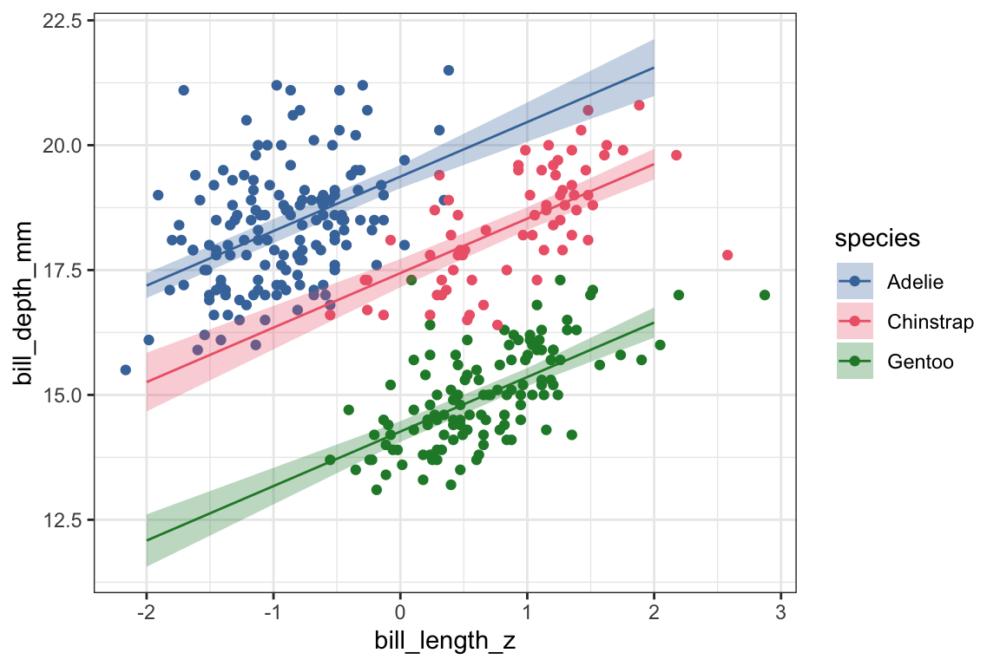

Multivariate models aren’t just univariate models glued together
Author
Josef Fruehwald
Like the title says, multivariate models aren’t just univariate models glued together. In fact, there’s no straightforward way to calculate, ahead of time, what the parameters of a model y ~ x1 + x2 will be if all you have are separate univariate models y ~ x1 and y ~ x2. I’ll demonstrate that with an example modelling the bill depth of penguins, using bill length and species as predictors.
Normally, I’d recommend making a plot of the outcome & predictor variable before fitting a model, but just to avoid repeating too much code here, we’ll fit the models first, then plot their predicted values on the data.
Bill Length Model
We’ll start with a univariate (one variable) model, predicting bill_depth_mm with bill_length_z.
The estimated effect of bill_length_z is -0.464, meaning that for every 1 standard deviation increase in bill length, we expect bill depth to decrease by -0.464 millimeters.
We can get the bill depth values this model predicts with the marginaleffects::predictions() function.
predictions() is from the {marginaleffects} package.
2
This is the model we want to get predictions from.
3
We want to get predicted values at specific points/combinations of predictors, so we use the newdata argument. datagrid() is another function from {marginaleffects} that will create a data frame.
4
We want to get predicted bill_depth_mm values for some representative bill_length_z values.
5
The output of predictions() isn’t quite what we want for making a plot, so we convert it with tibble().
The pred_len dataframe
pred_len |> rmarkdown::paged_table()
We can plot these predicted values over top the original data. One thing to know is that the line we plot here is identical to what we’d get if we just added stat_smooth(method = lm) to the plot.
Adding a line to represent the predicted values, which are in the pred_len dataframe.
3
In pred_len, the predicted bill depth is in the estimate column.
4
Adding a confidence interval onto the predicted values with geom_ribbon().
5
The width of geom_ribbon() is determined by the ymax and ymin aesthetics, and the high and low points of the confidence interval are in the conf.low and conf.high columns of pred_len.
6
Setting a transparency on the confidence interval.
So, as you can see, the line of predicted values of bill depth slopes downwards as bill length increases when we include only bill_length_z in the model.
Species Model.
Now, let’s fit a model looking at just an effect of Species. I’ve left the alphabetically first penguin species, Adelie, as the reference level.
So, the predicted bill depth for our reference level (Adelie) is 18.35 millimeters. Chinstraps are estimated to have deeper bills by 0.07mm (not significant), and Gentoos are estimated to have less deep bills by -3.36mm.
Let’s get the predicted bill depths from our model to plot over our data.
Strictly speaking, coloring the data by species is redundant for this plot, but we’re sticking to a common color scheme across all plots.
3
ggbeeswarm::geom_beeswarm() is one way to try to deal with plotting a continuous variable against a categorical variable.
4
I’m making the data points small and open circles so that they’ll be visually distinct from the points we use to plot the predicted values.
5
geom_pointrange() plot a point to represent the estimated value, and a “whisker” to represent the confidence interval.
6
Our predicted values are in pred_species.
7
The predicted value is in the estimate column, and the high and low points for the confidence intervals are in conf.high and conf.low.
8
Re-using our consistent color scheme.
Univariate model recap.
Just to recap what we’ve seen from our two separate univariate models:
When we modelled bill_depth_mm with bill_length_z, we got an estimated slope of -0.464 .
When we predicted bill_depth_mm with species, we estimated that Chinstraps have a bill depth 0.07mm more than Adelies, and Gentoos have a bill depth -3.36 less than Adelies.
Fitting the multivariate model
Now, let’s see what we get when we fit a multivatiate model, including both bill length and species in the model.
The estimated effects of bill length and species in this multivariate model are really different from each separate univariate model. Let’s look at them right next to each other, comparing the multivariate model to the “glued together” univariate model estimates.
term
multivariate
glued togther univariate
bill_length_z
1.09
−0.46
speciesChinstrap
−1.93
0.07
speciesGentoo
−5.11
−3.36
The effect of bill_length_z has gone from negative in the univariate model to positive in the multivariate model, meaning we’re now predicting that as bill length gets longer, bill depth gets deeper.
Chinstraps have gone from having a predicted bill depth that’s just about the same as Adelies in the univariate model to a predicted shorter bill depth.
Gentoos predicted to have a less deep bill than Adelies in both models, but the difference is predicted to be larger in the multivariate model.
Why are the estimates so different between the multivariate and univariate models? Let’s get predicted values to plot over the data.
We’re getting predictions from our multivariate mod_len_species model.
3
We’re going to get predictions for the newdata generated by datagrid(). This time, because we’re creating two columns, datagrid() is going to create a row for every combination of values in bill_length_z and species.
4
We want predictions for representative values of bill_length_z and species.
5
Conversion to a dataframe.
pred_len_species
pred_len_species |> rmarkdown::paged_table()
Let’s first plot these predicted values over the bill length x bill depth scatterplot.
Setting up the scatter plot, this time coloring points according to penguin species.
2
Adding on the predicted values from pred_len_species.
3
Adding on confidence intervals.
4
The plot looks nicer with these settings.
5
Using our color scheme for both the color of the points & lines and the fill of the ribbons.

What we can see now is that when looking at the data overall, the relationship between bill length and bill depth might be negative, but when looking within each species, the relationship is positive. For Adelies, penguins with longer bills have deeper bills, and the same goes for Chinstraps and Gentoos.
The original slope in the univariate model was negative because each species has a different baseline bill depth and different ranges of bill lengths. When fitting a univariate model that didn’t take species into account, this results in a negative slope! This mismatch between the effect within groups vs combining groups is known as Simpson’s Paradox.
Remaining Questions:
Could we have predicted what the slopes were going to be in the multivariate model?
When we were learning about centering and scaling predictors for univariate models, it was possible to calculate what the new parameters were going to be after (linearly) transforming them. Could we have mathematically calculated what the slopes were going to be in the multivariate model based on the two univariate models?
No. The negative slope in the bill_depth_mm ~ bill_length_z, for example, was estimated with information about species missing (i.e. bill_depth_mm’s relationship to species and bill_length_z’s relationship to species).
Did the univariate models miscalculate the relationship between bill length, species, and bill depth?
No, not really. As it turns out, the univariate models aren’t very good models for predicting bill depth. If we compare their model fits as well as \(R^2\) and goodness of fit heuristics, AIC and BIC, the multivariate model is preferred.
model
r.squared
AIC
BIC
~len
0.06
1,422
1,433
~species
0.68
1,054
1,069
~len + species
0.77
944
963
But, just because the univariate models aren’t ideal, that doesn’t mean they miscalculated anything. When trying to estimate the effect of bill length on bill depth in the absence of species information, the slope is negative.
How do I visualize fitted multivariate models?
One important takeaway is that in order to visualize the results of a multivariate model, you can’t just plot the fit of a univariate model. This plot doesn’t show a line with a slope of 1.09.
Instead, you need to get predicted values from the multivariate model. The code above used marginaleffects::predictions() to do that, but there are actually lots of ways to go about it. For example, here’s some base R code to do it.